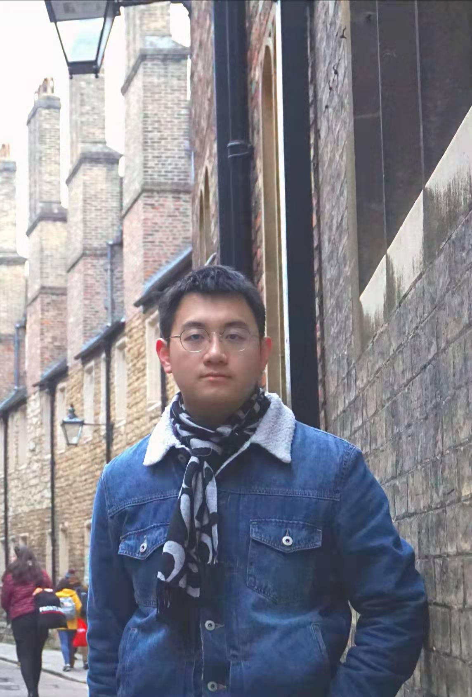
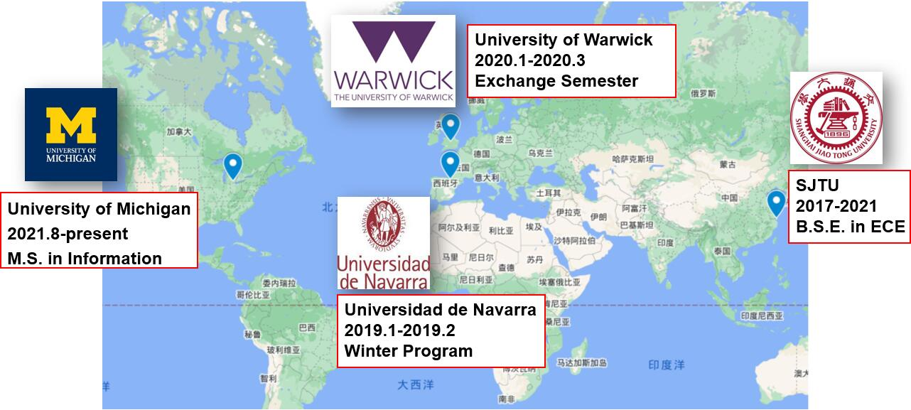
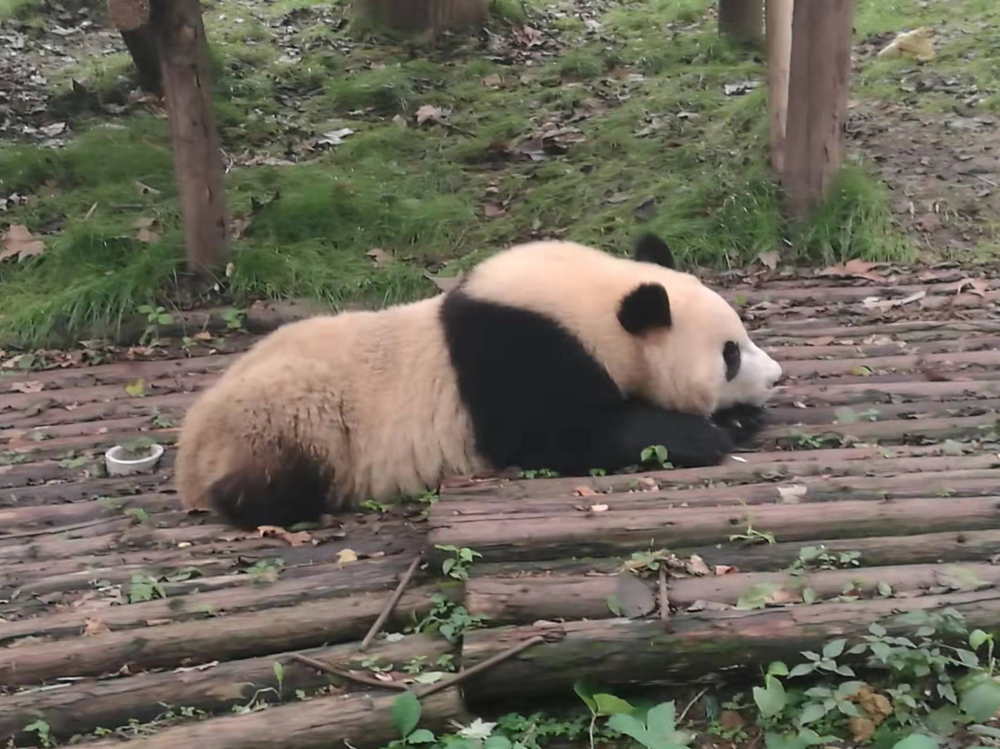
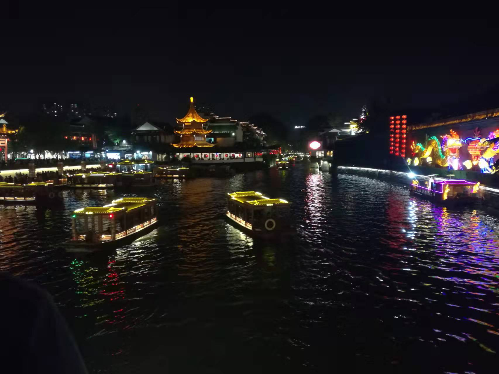
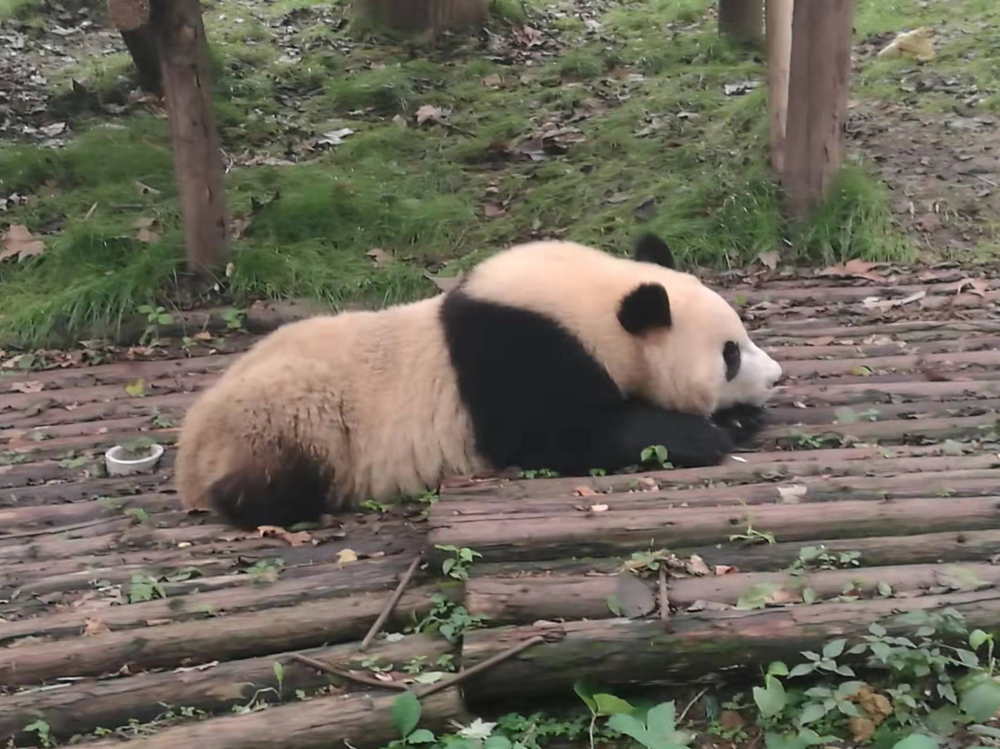
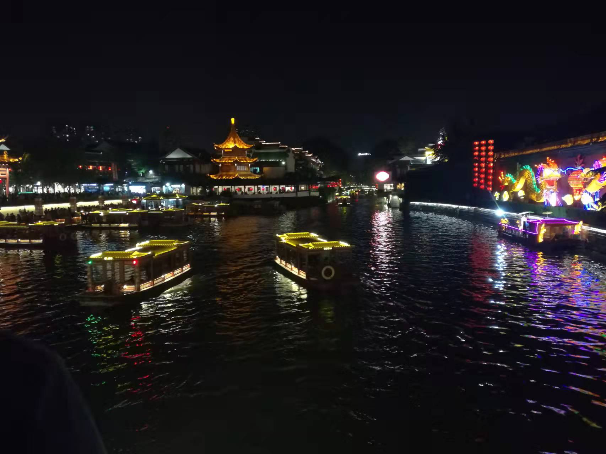

Hi! My name is Yanjun Chen. I am currently a first-year MSI student at the University of Michigan School of Information, where I am working towards a Master of Science in Information with a focus on Data Science and Analytics. I graduated from Shanghai Jiao Tong University in 2021 with a background in Electrical and Computer Engineering. I love travelling, both globally and domestically. See the next two sections for my travelling experience.
About Me

Global Experience

Travelling in China
 


